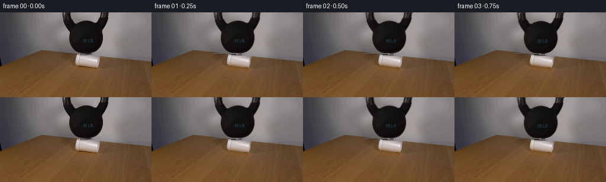
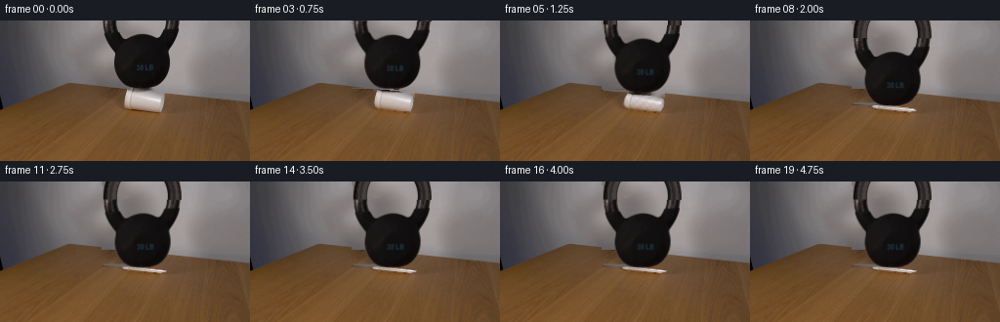

CODING AGENTS AS PIXEL WORLD MODELS
traex/GPT-6.1-Sol · 0192
点击播放 · 原生 RGB 像素
逐轮保存的候选
回放视频、检查图与代码变化。
每份候选均可单独播放。实际图片检查记录在下方工具轨迹中。
候选 01播放与检查图
点击播放 · 原生 RGB 像素


展开代码变化
--- 上一保存版本
+++ 本次保存版本
@@ -0,0 +1,160 @@
+from pathlib import Path
+import numpy as np
+from PIL import Image, ImageDraw
+import cv2
+from scipy.interpolate import RBFInterpolator, PchipInterpolator
+from scipy.ndimage import gaussian_filter
+import artifact_io
+
+ROOT=Path(__file__).resolve().parent
+im=np.asarray(Image.open(ROOT/'first_frame.png').convert('RGB'),dtype=np.float32)
+H,W=im.shape[:2]
+Y,X=np.mgrid[:H,:W].astype(np.float32)
+rng=np.random.default_rng(31)
+# Restore the stationary backdrop from visible pixels surrounding the iron.
+lum=im.mean(2)
+metal=np.zeros((H,W),np.uint8)
+for y in range(69):
+ ids=np.flatnonzero((lum[y]<100)&(np.arange(W)>=105)&(np.arange(W)<=184))
+ for group in np.split(ids,np.flatnonzero(np.diff(ids)>3)+1):
+ if len(group): metal[y,group[0]:group[-1]+1]=1
+# Fill the lit interior of the solid body without filling the handle aperture.
+for y in range(19,69):
+ ids=np.flatnonzero(metal[y]); metal[y,ids[0]:ids[-1]+1]=1
+# Samples deliberately exclude the objects and the table edge.
+valid=(X>=90)&(X<=202)&(Y<73)&(metal==0)
+valid &= ~((Y>64)&(X<130))
+valid &= ~((Y>68)&(X>127)&(X<169))
+valid &= ((X.astype(int)%3==0)&(Y.astype(int)%3==0))
+pts=np.column_stack([X[valid]/75,Y[valid]/75])
+values=im[valid]
+rbf=RBFInterpolator(pts,values,kernel='thin_plate_spline',smoothing=.012)
+bg=im.copy()
+reg=(X>=103)&(X<=186)&(Y<73)
+bg[reg]=rbf(np.column_stack([X[reg]/75,Y[reg]/75]))
+# A subdued photographic grain, shared by every frame (no camera motion).
+grain=gaussian_filter(rng.normal(0,.55,(H,W)),.5)
+bg[reg]+=grain[reg,None]
+# Anti-aliased metal extraction based on the backdrop/iron colour mixture.
+expanded=cv2.dilate(metal,np.ones((3,3),np.uint8))
+interior=cv2.erode(metal,np.ones((3,3),np.uint8))
+a=np.zeros((H,W),np.float32)
+a[interior>0]=1
+edge=(expanded>0)&(interior==0)&(Y<69)
+# The tangent's surface tone is recovered from the nearest dark surface.
+dark=cv2.erode(metal,np.ones((2,2),np.uint8))
+# Edge pixels are very dark iron against a neutral wall.
+fore=np.where(Y<10,30,18)
+ratio=(bg.mean(2)-lum)/np.maximum(25,bg.mean(2)-fore)
+a[edge]=np.clip(ratio[edge],0,1)
+a[metal>0]=np.maximum(a[metal>0],.98)
+# Internal glints in the handle are opaque, not transparent holes.
+for y in range(10):
+ a[y,108:118]=1
+ a[y,173:182]=1
+# Final lower tangent is rounded and antialiased.
+a[Y>=69]=0
+# Cup, including its shaded bottom, recovered as a separate photographic layer.
+def polygon_mask(coords,scale=6):
+ p=Image.new('L',(W*scale,H*scale),0)
+ ImageDraw.Draw(p).polygon([(round(x*scale),round(y*scale)) for x,y in coords],fill=255)
+ return np.asarray(p.resize((W,H),Image.Resampling.LANCZOS),dtype=np.float32)/255
+cup=polygon_mask([(130.0,70.5),(135.8,72.3),(150.8,72.9),(159.8,74.0),(166.5,77.0),
+ (167.0,82.5),(166.0,88.0),(164.1,93.0),(158.3,92.7),(148,91.6),
+ (137,90.2),(131,89.2),(128.5,87.7),(127.3,83.7),(127.7,79.0),(128.7,74.4)])
+# Restore table where the expanded foam or moving weight reveals it.
+remove=(cup>.015).astype(np.uint8)
+remove=cv2.dilate(remove,np.ones((3,3),np.uint8))
+# Inpainting on just the small cup shape preserves the wood grain and table horizon.
+table=cv2.inpaint(im.astype(np.uint8),remove*255,5,cv2.INPAINT_TELEA).astype(np.float32)
+bg[remove>0]=table[remove>0]
+# Keep the known wall behind the top of the cup; the table's rear edge runs diagonally.
+wall_top=69.8+.100*(X-130)
+sel=(remove>0)&(Y<wall_top)
+bg[sel]=rbf(np.column_stack([X[sel]/75,Y[sel]/75]))
+# Outside either source silhouette keep the exact original shot.
+region=((expanded>0)&(Y<70))|(remove>0)
+plate=im.copy();plate[region]=bg[region]
+# Extract premultiplied colours, so photographic edge pixels stay clean after movement.
+def premult(alpha):
+ p=im-plate*(1-alpha[...,None])
+ return np.clip(p,0,255*alpha[...,None]).astype(np.float32)
+met_rgb=premult(a)
+cup_rgb=premult(cup)
+# Continue the cropped handle beyond the top margin with the same iron texture.
+PAD=36
+ma=np.zeros((H+PAD,W),np.float32); mr=np.zeros((H+PAD,W,3),np.float32)
+ma[PAD:]=a;mr[PAD:]=met_rgb
+for row in range(PAD):
+ yy=row-PAD
+ # The handle is a tall, forged oval whose crown remains above the frame.
+ outer=40*np.sqrt(max(0,1-((yy+3)/47)**2))
+ inner=26*np.sqrt(max(0,1-((yy+4)/29)**2))
+ center=144.5
+ for xx in range(W):
+ d=abs(xx-center)
+ al=np.clip(outer-d+.5,0,1)*np.clip(d-inner+.5,0,1)
+ if al:
+ # Texture on the visible left/right limbs is continued into the crop.
+ side=xx<center
+ sx=int(np.clip(106+(d-inner)/(max(1,outer-inner))*12,106,118)) if side else int(np.clip(182-(d-inner)/(max(1,outer-inner))*12,170,182))
+ col=im[0,sx].copy()
+ col=np.minimum(col,[68,64,63])
+ col+=1.5*np.sin(xx*2.7+yy*.83)
+ ma[row,xx]=al;mr[row,xx]=col*al
+
+def layer(dst,col,alpha):
+ return dst*(1-alpha[...,None])+col
+
+def remap(arr,mx,my):
+ return cv2.remap(arr,mx.astype(np.float32),my.astype(np.float32),cv2.INTER_LINEAR,borderMode=cv2.BORDER_CONSTANT)
+
+# The cup's rim yields first; shell buckling is followed by damped settling.
+times=np.array([0,.25,.50,.75,1,1.25,1.50,1.75,2,2.25,2.5,3,4.75])
+drops=np.array([0,.13,.35,.75,1.6,4.6,12.9,18.65,18.15,18.85,18.65,18.7,18.7])
+fall=PchipInterpolator(times,drops)
+frames=[im.astype(np.uint8)]
+for index in range(1,20):
+ t=index/4
+ dy=float(fall(t))
+ crush=np.clip(dy/18.7,0,1)
+ s=1-dy/23.4
+ # Eccentric loading introduces a tiny rocking movement, not a camera pan.
+ tilt=np.deg2rad((.7*np.sin(np.pi*min(t,2)/2)+.28*crush))
+ dx=.48*crush
+ canvas=plate.copy()
+ # Contact shadow at the cup's foot remains anchored to the wooden table.
+ sh=np.exp(-((X-147.5)/23)**2-((Y-93.2)/2.0)**2)*(.07*crush)
+ canvas*=1-sh[...,None]
+ # Inverse shell deformation: bottom is fixed, the sides flare and fold under load.
+ bottom=91.4+.102*(X-143)
+ sy=bottom+(Y-bottom)/s
+ u=np.clip((91.5-sy)/21.0,0,1)
+ flare=1+.15*crush*np.sin(np.pi*u)
+ fold=crush*(.9*np.sin(sy*.83+X*.48)+.42*np.sin(sy*1.9-X*.53))
+ sx=147+(X-147-dx*u)/flare-fold*.45
+ # Local wrinkles grow only during buckling, conserving the foam's foot position.
+ sy+=fold*.35*crush
+ ca=remap(cup,sx,sy)
+ cc=remap(cup_rgb,sx,sy)
+ # Creased facets follow the deformed source, using the same textured styrofoam.
+ relief=(np.sin(sx*.69+sy*.58)+.55*np.sin(sx*1.25-sy*.71))
+ shading=1+(.085*crush)*relief
+ cc*=shading[...,None]
+ cc=np.clip(cc,0,255*ca[...,None])
+ canvas=layer(canvas,cc,ca)
+ # Shadow of the iron base on the collapsing rim.
+ occlusion=np.exp(-((X-(145.5+dx))/14)**4-((Y-(69.1+dy))/1.45)**2)*(.26*crush)
+ canvas*=1-occlusion[...,None]*ca[...,None]
+ # Iron moves as a single rigid body. No scaling or material deformation.
+ px=145.0;py=68.5
+ xx=X-(px+dx); yy=Y-(py+dy)
+ mx=np.cos(tilt)*xx+np.sin(tilt)*yy+px
+ my=-np.sin(tilt)*xx+np.cos(tilt)*yy+py+PAD
+ ba=remap(ma,mx,my);bc=remap(mr,mx,my)
+ canvas=layer(canvas,bc,ba)
+ frames.append(np.rint(np.clip(canvas,0,255)).astype(np.uint8))
+frames=np.stack(frames)
+artifact_io.save(frames,ROOT)
+# Numerical inspection samples, with no use of visual tools.
+np.save(ROOT/'.tmp/generated_rgb.npy',frames)
候选 02播放与检查图
点击播放 · 原生 RGB 像素

展开代码变化
--- 上一保存版本
+++ 本次保存版本
@@ -59,9 +59,9 @@
p=Image.new('L',(W*scale,H*scale),0)
ImageDraw.Draw(p).polygon([(round(x*scale),round(y*scale)) for x,y in coords],fill=255)
return np.asarray(p.resize((W,H),Image.Resampling.LANCZOS),dtype=np.float32)/255
-cup=polygon_mask([(130.0,70.5),(135.8,72.3),(150.8,72.9),(159.8,74.0),(166.5,77.0),
+cup=polygon_mask([(130.0,68.8),(136.0,69.0),(150.8,71.2),(159.8,73.4),(166.5,77.0),
(167.0,82.5),(166.0,88.0),(164.1,93.0),(158.3,92.7),(148,91.6),
- (137,90.2),(131,89.2),(128.5,87.7),(127.3,83.7),(127.7,79.0),(128.7,74.4)])
+ (137,90.2),(131,89.2),(128.5,87.7),(127.3,83.7),(127.7,79.0),(128.7,73.4)])
# Restore table where the expanded foam or moving weight reveals it.
remove=(cup>.015).astype(np.uint8)
remove=cv2.dilate(remove,np.ones((3,3),np.uint8))
@@ -120,7 +120,7 @@
crush=np.clip(dy/18.7,0,1)
s=1-dy/23.4
# Eccentric loading introduces a tiny rocking movement, not a camera pan.
- tilt=np.deg2rad((.7*np.sin(np.pi*min(t,2)/2)+.28*crush))
+ tilt=np.deg2rad((.5*crush*np.sin(np.pi*min(t,2)/2)+.28*crush))
dx=.48*crush
canvas=plate.copy()
# Contact shadow at the cup's foot remains anchored to the wooden table.
@@ -153,6 +153,10 @@
my=-np.sin(tilt)*xx+np.cos(tilt)*yy+py+PAD
ba=remap(ma,mx,my);bc=remap(mr,mx,my)
canvas=layer(canvas,bc,ba)
+ # Subpixel initial elastic loading has no abrupt segmentation transition.
+ if dy<1.0:
+ mix=np.clip(dy/1.0,0,1)
+ canvas=im*(1-mix)+canvas*mix
frames.append(np.rint(np.clip(canvas,0,255)).astype(np.uint8))
frames=np.stack(frames)
artifact_io.save(frames,ROOT)
候选 03播放与检查图
可观测工具轨迹
实际执行的命令与返回图片。
命令 1exit 0
/bin/bash -lc 'ls -la && cat prompt.txt && cat GENERATION_RULES.md'
命令 2exit 0
/bin/bash -lc "cat artifact_io.py && python - <<'PY'
from PIL import Image
import numpy as np
im=np.array(Image.open('first_frame.png').convert('RGB')); print(im.shape)
# coarse perceptual ascii luminance
x=np.array(Image.fromarray(im).resize((96,54)))
gray=x.mean(2)
s=' .:-=+*#%@'
for y in range(54): print(''.join(s[min(9,int(v/256*10))] for v in gray[y]))
PY"命令 3exit 0
/bin/bash -lc "python - <<'PY'
from PIL import Image
import numpy as np
im=np.array(Image.open('first_frame.png'))
for y in range(0,110,3):
s=''
for x in range(80,201,2):
r,g,b=map(int,im[y,x,:3]);v=(r+g+b)/3
c='K' if v<30 else 'k' if v<45 else 'd' if v<65 else '.' if v<85 else ':' if v<105 else '+' if v<125 else '*' if v<150 else '#' if v<180 else '%' if v<210 else '@'
s+=c
print(f'{y:03d} '+s)
print('RGB rows')
for y in [0,10,20,40,55,65,68,70,72,74,76,80,84,88,92,96,100]:
print(y,' '.join(f'{x}:{tuple(im[y,x,:3])}' for x in [100,115,120,125,130,135,140,145,150,155,160,165,170,175,180,185,190]))
PY"命令 4exit 0
/bin/bash -lc "python - <<'PY'
import numpy as np
from PIL import Image
im=np.array(Image.open('first_frame.png')).astype(float)
for y in range(58,98):
line=''
for x in range(110,181):
r,g,b=im[y,x]; v=(r+g+b)/3
if r-b>20: c='.' if v<105 else ','
else: c=' ' if v>=100 and v<165 else '#' if v<35 else 'o' if v<65 else ':' if v<100 else '+' if v<180 else '*' if v<200 else 'W' if v<220 else '@'
line+=c
print(f'{y:02d} {line}')
PY"命令 5exit 0
/bin/bash -lc "python - <<'PY'
import numpy as np
from PIL import Image
im=np.array(Image.open('first_frame.png')).astype(float)
r,g,b=im.transpose(2,0,1); m=(r>140)&(g>110)&(b>80)
for x in range(122,173):
ys=np.where(m[70:96,x])[0]+70
if len(ys):print(x,ys.min(),ys.max(),np.round(im[ys,x].mean(0),1))
PY"命令 6exit 0
/bin/bash -lc "python - <<'PY'
from PIL import Image
import numpy as np
im=np.array(Image.open('first_frame.png')).astype(float)
for y in range(0,74):
m=(im[y,:,0]+im[y,:,1]+im[y,:,2])/3<85
m[:98]=0;m[190:]=0
xs=np.where(m)[0]
runs=[]
for z in np.split(xs,np.where(np.diff(xs)>1)[0]+1):
if len(z): runs.append((int(z[0]),int(z[-1])))
print(y,runs)
PY"命令 7exit 0
/bin/bash -lc "python - <<'PY'
import numpy as np
from PIL import Image
im=np.array(Image.open('first_frame.png')).astype(float)
for y in [0,3,6,10,13,15,18,22,30,38,48,60,64,67,68,69,70,71]:
print('\\n',y)
print(' '.join(f'{x}:{round(im[y,x].mean())}' for x in range(103,185)))
PY"命令 8exit 0
/bin/bash -lc "python - <<'PY' import importlib.util for m in ['scipy','cv2','PIL','numpy']:print(m,bool(importlib.util.find_spec(m))) PY"
命令 9exit 0
/bin/bash -lc "python - <<'PY'
from PIL import Image
import numpy as np
im=np.array(Image.open('first_frame.png')).astype(float)
for x in [0,10,20,40,60,80,100,110,115,120,125,128,170,175,180,190,210,230,250]:
r,g,b=im[:,x].T; ys=np.where((r-b>20)&(np.arange(144)>50))[0];print(x,ys[0],im[ys[0],x],im[max(0,ys[0]-2),x])
PY"命令 10exit 0
/bin/bash -lc "mkdir -p .tmp && cat > .tmp/analyze.py <<'PY'
import numpy as np
from PIL import Image
im=np.array(Image.open('first_frame.png')).astype(float)
# initial cup and handle exact high density pixel luminance ascii
lut=' .:-=+*#%@'
for y in range(68,96):
print(f'{y:02d} '+''.join(lut[min(9,int(im[y,x].mean()/256*10))] for x in range(124,173)))
PY
python .tmp/analyze.py"命令 11exit 0
/bin/bash -lc "python - <<'PY'
import numpy as np
from PIL import Image
im=np.array(Image.open('first_frame.png')).astype(float)
for y in [0,5,10,15,20,30,40,50,60,65,68,70]:
print(y, 'left',[(x,tuple(np.round(im[y,x]).astype(int))) for x in [98,100,102,104]],'right', [(x,tuple(np.round(im[y,x]).astype(int))) for x in [184,186,190,196]])
PY"命令 12exit 0
/bin/bash -lc "cat > generate.py <<'PY'
from pathlib import Path
import numpy as np
from PIL import Image, ImageDraw
import cv2
from scipy.interpolate import RBFInterpolator, PchipInterpolator
from scipy.ndimage import gaussian_filter
import artifact_io
ROOT=Path(__file__).resolve().parent
im=np.asarray(Image.open(ROOT/'first_frame.png').convert('RGB'),dtype=np.float32)
H,W=im.shape[:2]
Y,X=np.mgrid[:H,:W].astype(np.float32)
rng=np.random.default_rng(31)
# Restore the stationary backdrop from visible pixels surrounding the iron.
lum=im.mean(2)
metal=np.zeros((H,W),np.uint8)
for y in range(69):
ids=np.flatnonzero((lum[y]<100)&(np.arange(W)>=105)&(np.arange(W)<=184))
for group in np.split(ids,np.flatnonzero(np.diff(ids)>3)+1):
if len(group): metal[y,group[0]:group[-1]+1]=1
# Fill the lit interior of the solid body without filling the handle aperture.
for y in range(19,69):
ids=np.flatnonzero(metal[y]); metal[y,ids[0]:ids[-1]+1]=1
# Samples deliberately exclude the objects and the table edge.
valid=(X>=90)&(X<=202)&(Y<73)&(metal==0)
valid &= ~((Y>64)&(X<130))
valid &= ~((Y>68)&(X>127)&(X<169))
valid &= ((X.astype(int)%3==0)&(Y.astype(int)%3==0))
pts=np.column_stack([X[valid]/75,Y[valid]/75])
values=im[valid]
rbf=RBFInterpolator(pts,values,kernel='thin_plate_spline',smoothing=.012)
bg=im.copy()
reg=(X>=103)&(X<=186)&(Y<73)
bg[reg]=rbf(np.column_stack([X[reg]/75,Y[reg]/75]))
# A subdued photographic grain, shared by every frame (no camera motion).
grain=gaussian_filter(rng.normal(0,.55,(H,W)),.5)
bg[reg]+=grain[reg,None]
# Anti-aliased metal extraction based on the backdrop/iron colour mixture.
expanded=cv2.dilate(metal,np.ones((3,3),np.uint8))
interior=cv2.erode(metal,np.ones((3,3),np.uint8))
a=np.zeros((H,W),np.float32)
a[interior>0]=1
edge=(expanded>0)&(interior==0)&(Y<69)
# The tangent's surface tone is recovered from the nearest dark surface.
dark=cv2.erode(metal,np.ones((2,2),np.uint8))
# Edge pixels are very dark iron against a neutral wall.
fore=np.where(Y<10,30,18)
ratio=(bg.mean(2)-lum)/np.maximum(25,bg.mean(2)-fore)
a[edge]=np.clip(ratio[edge],0,1)
a[metal>0]=np.maximum(a[metal>0],.98)
# Internal glints in the handle are opaque, not transparent holes.
for y in range(10):
a[y,108:118]=1
a[y,173:182]=1
# Final lower tangent is rounded and antialiased.
a[Y>=69]=0
# Cup, including its shaded bottom, recovered as a separate photographic layer.
def polygon_mask(coords,scale=6):
p=Image.new('L',(W*scale,H*scale),0)
ImageDraw.Draw(p).polygon([(round(x*scale),round(y*scale)) for x,y in coords],fill=255)
return np.asarray(p.resize((W,H),Image.Resampling.LANCZOS),dtype=np.float32)/255
cup=polygon_mask([(130.0,70.5),(135.8,72.3),(150.8,72.9),(159.8,74.0),(166.5,77.0),
(167.0,82.5),(166.0,88.0),(164.1,93.0),(158.3,92.7),(148,91.6),
(137,90.2),(131,89.2),(128.5,87.7),(127.3,83.7),(127.7,79.0),(128.7,74.4)])
# Restore table where the expanded foam or moving weight reveals it.
remove=(cup>.015).astype(np.uint8)
remove=cv2.dilate(remove,np.ones((3,3),np.uint8))
# Inpainting on just the small cup shape preserves the wood grain and table horizon.
table=cv2.inpaint(im.astype(np.uint8),remove*255,5,cv2.INPAINT_TELEA).astype(np.float32)
bg[remove>0]=table[remove>0]
# Keep the known wall behind the top of the cup; the table's rear edge runs diagonally.
wall_top=69.8+.100*(X-130)
sel=(remove>0)&(Y<wall_top)
bg[sel]=rbf(np.column_stack([X[sel]/75,Y[sel]/75]))
# Outside either source silhouette keep the exact original shot.
region=((expanded>0)&(Y<70))|(remove>0)
plate=im.copy();plate[region]=bg[region]
# Extract premultiplied colours, so photographic edge pixels stay clean after movement.
def premult(alpha):
p=im-plate*(1-alpha[...,None])
return np.clip(p,0,255*alpha[...,None]).astype(np.float32)
met_rgb=premult(a)
cup_rgb=premult(cup)
# Continue the cropped handle beyond the top margin with the same iron texture.
PAD=36
ma=np.zeros((H+PAD,W),np.float32); mr=np.zeros((H+PAD,W,3),np.float32)
ma[PAD:]=a;mr[PAD:]=met_rgb
for row in range(PAD):
yy=row-PAD
# The handle is a tall, forged oval whose crown remains above the frame.
outer=40*np.sqrt(max(0,1-((yy+3)/47)**2))
inner=26*np.sqrt(max(0,1-((yy+4)/29)**2))
center=144.5
for xx in range(W):
d=abs(xx-center)
al=np.clip(outer-d+.5,0,1)*np.clip(d-inner+.5,0,1)
if al:
# Texture on the visible left/right limbs is continued into the crop.
side=xx<center
sx=int(np.clip(106+(d-inner)/(max(1,outer-inner))*12,106,118)) if side else int(np.clip(182-(d-inner)/(max(1,outer-inner))*12,170,182))
col=im[0,sx].copy()
col=np.minimum(col,[68,64,63])
col+=1.5*np.sin(xx*2.7+yy*.83)
ma[row,xx]=al;mr[row,xx]=col*al
def layer(dst,col,alpha):
return dst*(1-alpha[...,None])+col
def remap(arr,mx,my):
return cv2.remap(arr,mx.astype(np.float32),my.astype(np.float32),cv2.INTER_LINEAR,borderMode=cv2.BORDER_CONSTANT)
# The cup's rim yields first; shell buckling is followed by damped settling.
times=np.array([0,.25,.50,.75,1,1.25,1.50,1.75,2,2.25,2.5,3,4.75])
drops=np.array([0,.13,.35,.75,1.6,4.6,12.9,18.65,18.15,18.85,18.65,18.7,18.7])
fall=PchipInterpolator(times,drops)
frames=[im.astype(np.uint8)]
for index in range(1,20):
t=index/4
dy=float(fall(t))
crush=np.clip(dy/18.7,0,1)
s=1-dy/23.4
# Eccentric loading introduces a tiny rocking movement, not a camera pan.
tilt=np.deg2rad((.7*np.sin(np.pi*min(t,2)/2)+.28*crush))
dx=.48*crush
canvas=plate.copy()
# Contact shadow at the cup's foot remains anchored to the wooden table.
sh=np.exp(-((X-147.5)/23)**2-((Y-93.2)/2.0)**2)*(.07*crush)
canvas*=1-sh[...,None]
# Inverse shell deformation: bottom is fixed, the sides flare and fold under load.
bottom=91.4+.102*(X-143)
sy=bottom+(Y-bottom)/s
u=np.clip((91.5-sy)/21.0,0,1)
flare=1+.15*crush*np.sin(np.pi*u)
fold=crush*(.9*np.sin(sy*.83+X*.48)+.42*np.sin(sy*1.9-X*.53))
sx=147+(X-147-dx*u)/flare-fold*.45
# Local wrinkles grow only during buckling, conserving the foam's foot position.
sy+=fold*.35*crush
ca=remap(cup,sx,sy)
cc=remap(cup_rgb,sx,sy)
# Creased facets follow the deformed source, using the same textured styrofoam.
relief=(np.sin(sx*.69+sy*.58)+.55*np.sin(sx*1.25-sy*.71))
shading=1+(.085*crush)*relief
cc*=shading[...,None]
cc=np.clip(cc,0,255*ca[...,None])
canvas=layer(canvas,cc,ca)
# Shadow of the iron base on the collapsing rim.
occlusion=np.exp(-((X-(145.5+dx))/14)**4-((Y-(69.1+dy))/1.45)**2)*(.26*crush)
canvas*=1-occlusion[...,None]*ca[...,None]
# Iron moves as a single rigid body. No scaling or material deformation.
px=145.0;py=68.5
xx=X-(px+dx); yy=Y-(py+dy)
mx=np.cos(tilt)*xx+np.sin(tilt)*yy+px
my=-np.sin(tilt)*xx+np.cos(tilt)*yy+py+PAD
ba=remap(ma,mx,my);bc=remap(mr,mx,my)
canvas=layer(canvas,bc,ba)
frames.append(np.rint(np.clip(canvas,0,255)).astype(np.uint8))
frames=np.stack(frames)
artifact_io.save(frames,ROOT)
# Numerical inspection samples, with no use of visual tools.
np.save(ROOT/'.tmp/generated_rgb.npy',frames)
PY
python generate.py"命令 13exit 0
/bin/bash -lc "python - <<'PY'
import numpy as np
f=np.load('.tmp/generated_rgb.npy')
s=' .:-=+*#%@'
for i in [0,1,4,5,6,7,10,19]:
print('\\nFRAME',i)
for y in range(0,108,2):
print(f'{y:03d} '+''.join(s[min(9,int(f[i,y,x].mean()/256*10))] for x in range(96,191,2)))
print('changed',np.any(f[i]"'!=f[0],axis=2).sum(),'"'mean diff',abs(f[i].astype(float)-f[0]).mean())
PY"命令 14exit 0
/bin/bash -lc "python - <<'PY'
# inspect actual transition diffs quantitatively by regions
import numpy as np
f=np.load('.tmp/generated_rgb.npy').astype(float)
for i in [1,19]:
print(i)
for name,(x0,x1,y0,y1) in {'handle':(104,185,0,32),'weight':(116,176,32,68),'contact':(128,168,68,74),'cup':(125,171,74,96),'wall_L':(96,104,0,68),'wall_R':(185,202,0,68)}.items():
z=abs(f[i,y0:y1,x0:x1]-f[0,y0:y1,x0:x1]);print(name,round(z.mean(),2),np.percentile(z,95),z.max())
PY"命令 15exit 0
/bin/bash -lc "python - <<'PY'
p='generate.py'
s=open(p).read()
s=s.replace(\"cup=polygon_mask([(130.0,70.5),(135.8,72.3),(150.8,72.9),(159.8,74.0),(166.5,77.0),\", \"cup=polygon_mask([(130.0,68.8),(136.0,69.0),(150.8,71.2),(159.8,73.4),(166.5,77.0),\")
s=s.replace(\"(137,90.2),(131,89.2),(128.5,87.7),(127.3,83.7),(127.7,79.0),(128.7,74.4)])\", \"(137,90.2),(131,89.2),(128.5,87.7),(127.3,83.7),(127.7,79.0),(128.7,73.4)])\")
s=s.replace(\"tilt=np.deg2rad((.7*np.sin(np.pi*min(t,2)/2)+.28*crush))\", \"tilt=np.deg2rad((.5*crush*np.sin(np.pi*min(t,2)/2)+.28*crush))\")
s=s.replace(\"frames.append(np.rint(np.clip(canvas,0,255)).astype(np.uint8))\", \"# Subpixel initial elastic loading has no abrupt segmentation transition.\\n if dy<1.0:\\n mix=np.clip(dy/1.0,0,1)\\n canvas=im*(1-mix)+canvas*mix\\n frames.append(np.rint(np.clip(canvas,0,255)).astype(np.uint8))\")
open(p,'w').write(s)
PY
python generate.py
python - <<'PY'
import numpy as np
f=np.load('.tmp/generated_rgb.npy');s=' .:-=+*#%@'
for i in [0,1,4,6,19]:
print('FRAME',i)
for y in range(64,97):
print(f'{y:02d} '+''.join(s[min(9,int(f[i,y,x].mean()/256*10))] for x in range(120,175)))
print('Mean difference',abs(f[i].astype(float)-f[0]).mean())
PY"命令 16exit 0
/bin/bash -lc "python - <<'PY'
from PIL import Image
import numpy as np
from pathlib import Path
f=np.load('.tmp/generated_rgb.npy')
p=np.load('pixels.npz')['pixels'];assert f.shape==(20,144,256,3) and f.dtype==np.uint8
assert np.array_equal(f[0],np.array(Image.open('first_frame.png').convert('RGB')))
assert p.shape==(144,256,20)
print('Validated: 20 RGB frames, 256x144, frame 00 identical.')
print('Artifacts:', ', '.join(x.name for x in [Path('pixels.npz'),Path('index.html'),Path('generate.py')] if x.is_file()))
PY"保存候选 3 份；完成命令 16 次；可验证图片返回 0 张。原始 API 响应与完整日志保留在本地。